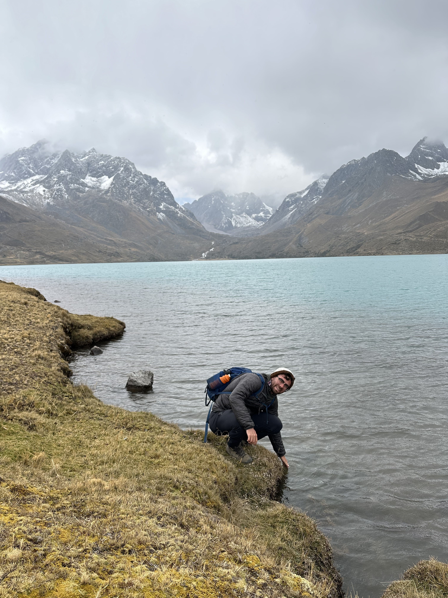

I'm a music and culture writer based in San Francisco. After growing up near Philadelphia, I spent several years living in Beijing, where I was able to see some of the incredible music being made outside the Anglosphere. Ever since, my writing has focused on exploring and showcasing innovative artists around the world.
Past work of mine has appeared in places like Bandcamp Daily, The Wire, and The Guardian. I also publish a newsletter called No Chambers on global music scenes and other musings on media and culture.
